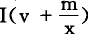

Ⅳ.补 充说 明
对第Ⅱ部类来说，原始的货币源泉是第Ⅰ部类金生产者用来和Ⅱc的一部分进行交换的v＋m。只有在金生产者积累剩余价值或把它转化为第Ⅰ部类的生产资料，从而扩大他的生产时，他的v＋m才不会进入第Ⅱ部类。另一方面，只有金生产者自己这方面的货币积累最终导致扩大再生产，金生产中不是用作收入而是用作金生产者的追加可变资本的那部分剩余价值，才进入第Ⅱ部类，在那里形成新的贮藏货币，或提供新的手段，使它能向第Ⅰ部类购买，而不需要直接再向第Ⅰ部类出售。从来源于金生产的Ⅰ（v＋m）的货币中，要扣除一部分金，用作第Ⅱ部类的某些生产部门所需要的原料等等，总之，用作它们的不变资本的补偿要素。为了将来扩大再生产，在第Ⅰ部类和第Ⅱ部类之间的交换中，会在以下场合出现暂时形成的货币贮藏的要素：对第Ⅰ部类来说，只是在这种场合，即Ⅰm的一部分单方面地、没有相应的购买而卖给第Ⅱ部类，并且在那里作为第Ⅱ部类的追加不变资本发挥作用；对第Ⅱ部类来说，是在这种场合，即当第Ⅰ部类方面为了取得追加的可变资本时，第Ⅱ部类做了第Ⅰ部类所做的上述同样的事情；其次，是在这种场合，即第Ⅰ部类作为收入花掉的那部分剩余价值没有和Ⅱc互相抵消，以致Ⅱm有一部分被人买去，转化为货币。如果大于Ⅱc，Ⅱc为了它的简单再生产，就不需要再用第Ⅰ部类的商品，来补偿Ⅱm中已经被第Ⅰ部类消费的部分。问题在于，在第Ⅱ部类各个资本家之间的交换中，——这种交换只能是Ⅱm的互相交换，——在多大程度上能够形成货币贮藏？我们知道，第Ⅱ部类内部之所以有直接的积累，是由于Ⅱm的一部分直接转化为可变资本（正如第Ⅰ部类内部之所以有直接的积累，是由于Im的一部分直接转化为不变资本）。只要指出，第Ⅱ部类的不同生产部门内部的积累，以及每个单个生产部门中的每个单个资本家的积累，都是处于不同的阶段，这个问题就已经可以得到说明了，如果作相应的变动，这也完全适用于第Ⅰ部类。一方面还处在货币贮藏、只卖不买的阶段，另一方面却已经处在实际扩大再生产、只买不卖的阶段。诚然，追加的可变货币资本首先是投在追加的劳动力上；但是这种劳动力向那些从事货币贮藏，持有追加的、供工人消费的消费资料的人购买生活资料。同这些人的货币贮藏相适应，货币不会从他们手里回到它的起点，他们会把货币积累起来。